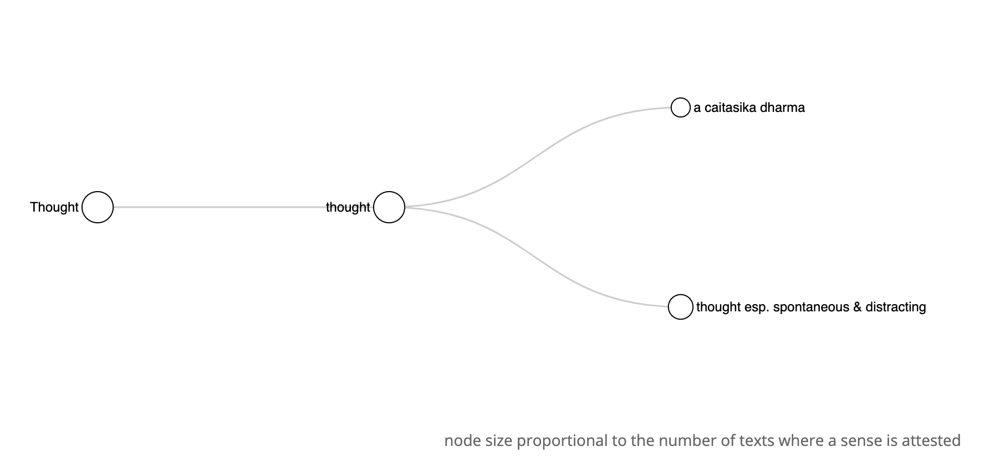
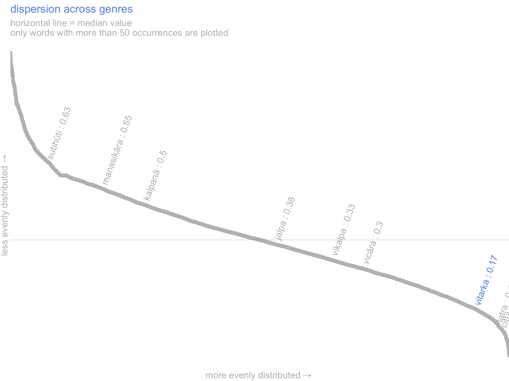
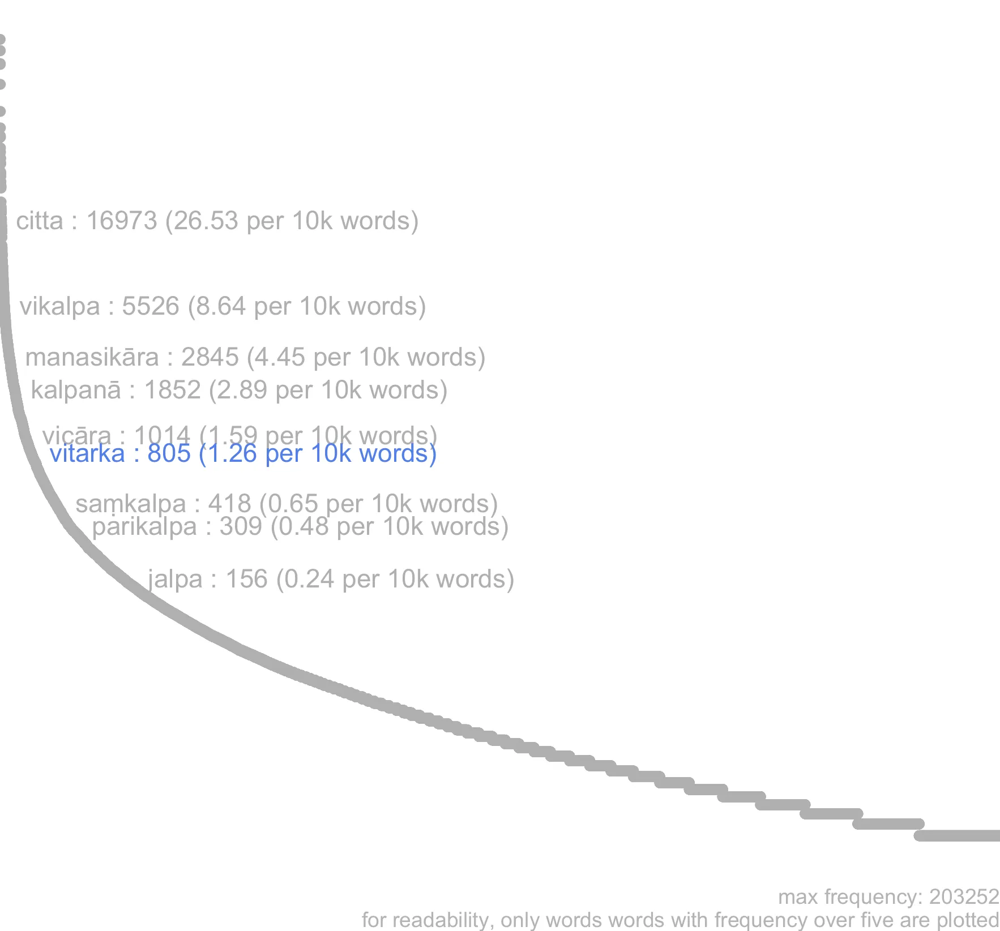
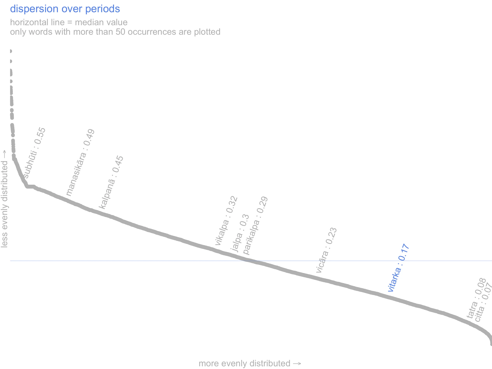
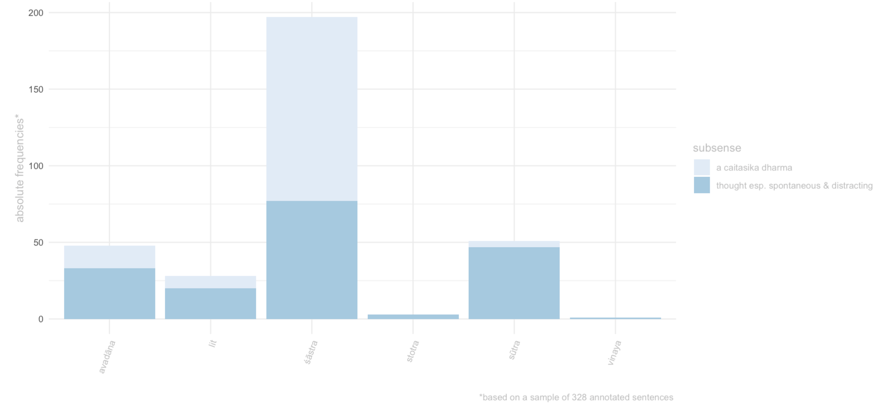

13 vitarka
13.1 overview
Vitarka belongs to the semantic domain of Thought. More specifically, vitarka is thought that surfaces to our attention spontaneously (thought esp. spontaneous & distracting), typically triggered by sense impressions, memories, or desires.
Many occurrences imply a tinge of lust or malice. For example, vitarka often indicates thoughts that linger on the prospect of meeting an attractive partner or, more darkly, on the prospect of violence. Whether these thoughts amount to fantasising, scheming, or engaging in a mental dialogue over the matter at hand is not clear. It is likely that vitarka was rather vague regarding this point, lending itself to take on all these different semantic nuances depending on context. The one aspect of thought that vitarka appears to foreground in non-specialised contexts is its unwitting, unintentional nature, with vitarka being typically characterized as distracting.
The unfocussed nature of vitarka is at the root of its terminological uses as the first dhyānāṅga and as a caitasika dharma. In the former application, vitarka denotes the initial, unfoccused, phase in mental progression that leads to meditative absorption . In the latter, it denotes a neutral mental factor traditionally held responsible for the initial steering of the mind towards an object of thought . These two meanings often overlap, since the caitasika dharma can function as the first dhyānāṅga. Hence we have merged these two specialized applications under the single label ‘a caitasika dharma’

13.2 frequency
Vitarka is a mid-frequency word in our corpus; both relative to all words in the corpus and relative specifically to words expressing the concept of thinking (note the position of vitarka on the word-frequency curve in the frequency graph ).
It is fairly uniformly distributed over all the diachronic layers considered in this dictionary. Indeed vitarka is more evenly distributed across both periods and genres than most words in our corpus (see dispersion graphs on the right, or in the dispersion tabs below; the fact that vitarka falls below the horizontal like indicates it is more evenly dispersed than the average word in our corpus).

Yet, despite being attested in all kinds of literature, its distribution over different genres is far from homogeneous, with its use definitely most prominent in śāstras (see sense by genre tab).”
Frequency and dispersion are calculated over the ~7-million words Segmented Corpus of Buddhist Sanskrit (10.5281/zenodo.3457822).
Dispersion is calculated with Gries’ deviation of proportion formula (Gries, S. 2008. Dispersion and adjusted frquencies in corpora. International Journal of Corpus Linguistics, 13(4): 403-437)
Frequency and dispersion are calculated over the ~7-million words Segmented Corpus of Buddhist Sanskrit (10.5281/zenodo.3457822).
Dispersion is calculated with Gries’ deviation of proportion formula (Gries, S. 2008. Dispersion and adjusted frquencies in corpora. International Journal of Corpus Linguistics, 13(4): 403-437)
Frequency and dispersion are calculated over the ~7-million words Segmented Corpus of Buddhist Sanskrit (10.5281/zenodo.3457822).
Dispersion is calculated with Gries’ deviation of proportion formula (Gries, S. 2008. Dispersion and adjusted frequencies in corpora. International Journal of Corpus Linguistics, 13(4): 403-437)



frequency and dispersion are calculated over the ~7-million words Segmented Corpus of Buddhist Sanskrit (10.5281/zenodo.3457822), as opposed to the smaller corpus used for the Visual Dictionary and Thesaurus of Buddhist Sanskrit (see dictionary documentation for details).
For the sake of readability, only words occurring at least 5 times in the corpus have been plotted on the frequency and dispersion curves.
Dispersion is calculated with Gries’ deviation of proportion formula (Gries, S. 2008. Dispersion and adjusted frquencies in corpora. International Journal of Corpus Linguistics, 13(4): 403-437).
the sense by genre plot is based on a sample of sentences that we have manually annotated with semantic information for the Visual Dictionary and Thesaurus of Buddhist Sanskrit. For details about our sampling and annotation procedures see the dictionary documentation page.
13.3 register
Vitarka occurs much more frequently in śāstra than in any other genre (526 occurrences per million words in śāstra and about 100 or less for the other genres). About two thirds of all attestations of this word in the Segmented Buddhist Sanskrit Corpus occur in śāstras (422 out of 637 attestations). This does not necessarily indicate that vitarka gravitates towards the philosophical or technical register. Attestations of the word vitarka in narrative and non-specialized contexts suggest that the use of this word is not restricted to the philosophical discourse, with the every-day character of some attestations even tilting towards a general language feel, e.g. :
If a man, moved by considerations of greed, had made a date with a handsome, attractive and good-looking woman, and if now that woman were held back by someone else and could not leave her house, what do you think, Subhuti, with what would that man’s preoccupations be connected? Subhuti: With the woman, of course. He thinks about her coming, about the things they will do together, and about the joy, fun and delight he will have with her. The Lord: Will he have many such ideas in the course of a day? Subhuti: Many indeed, O Lord. [Conze, 210]
(tadyathāpi nāma subhūte kaścid eva puruṣo rāgacarito vitarkacaritaḥ | tasya puruṣasya rāgacaritasya vitarkacaritasya striyā abhirūpayā prāsādikayā darśanīyayā saha saṃketaḥ kṛto bhavet | sā khalu punaḥ strī paraparigṛhītā bhavet | na vaśayed ātmānamagārān niṣkramitum | tat kiṃ manyase subhūte kiṃ pratisaṃyuktās tasya puruṣasya vitarkāḥ pravarteran? subhūtir āha - strīpratisaṃyuktā eva bhagavaṃs tasya puruṣasya vitarkāḥ pravarteran - iyam āgacchati, iyam āgatā | tayā sārdham evaṃ kariṣyāmi, evaṃ ramiṣyāmi, evaṃ krīḍiṣyāmi, evaṃ pravicārayiṣyāmīti | bhagavān āha - tat kiṃ manyase subhūte divasasyātyayena tasya puruṣasya kiyanto vitarkotpadyeran? subhūtir āha - bahavo bhagavan divasasyātyayena tasya puruṣasya vitarkotpadyeran … [Aṣṭasāhasrikāprajñāpāramitā: Vaidya, 170-171]).
The height of the bars in the charts indicates the normalized frequency of the lemma per 10,000 words, the colour of the bars indicates the absolute frequency.
The texts are arranged in decreasing order of absolute frequency, left to right. The height of the bars in the charts indicates the normalized frequency of the lemma per 10,000 words, the colour of the bars indicates the absolute frequency. The brighter the colour, the highest the absolute frequency of the lemma. Hover on bars to see title and frequency information.

Frequency is calculated over the ~7-million words Segmented Corpus of Buddhist Sanskrit (10.5281/zenodo.3457822), as opposed to the smaller corpus used for semantic annotations in the Visual Dictionary and Thesaurus of Buddhist Sanskrit (see dictionary documentation for details).
The height of the bars in the charts indicates the normalized frequency of the lemma per 10,000 words, the colour of the bars indicates the absolute frequency (i.e. the relative size of the texts/corpus in which the word occurs is not taken into account). The brighter the colour, the highest the absolute frequency of the lemma. The absolute frequency of the lemma is also reported in the numbers on top of each bar.
13.4 context
The predominance in śāstra materials is probably due to two factors. First, the topic to which this word is associated. That is, the torments and distractions brought about by worldly attachments, notably love and desire. As the even diachronic distribution of vitarka suggests, this topic is close to the core of Buddhist thought and largely unaffected by the waxing and waning of specific schools and philosophical controversies.
All kinds of treatises touch upon this matter, especially (but far from exclusively) in the context of meditation, hence the relatively high volume of occurrences of this word in sāstras. Some 80% of the attestation of vitarka we sampled from the Bodhisattvabhūmi, foreground this aspect of vitarka.
Second, as mentioned in the introductory paragraph, a ‘technical’ sense developed from the general senses of vitarka to term one of the caitasika dharma (and one of the dhyānāṅga). Terminological applications of the word are responsible for three quarters of the attestations we sampled from the Abhidharmakośabhāṣya, and is likely to play a major role in other śastras as well. In its specialized sense, vitarka is typically accompanied by vicāra, the caitasika dharma that is described as following vitarka in the chain of mental events leading to meditative concentration.
The statistically significant collocates of vitarka depicted in the wordcloud below clearly point to these two uses of vitarka, the more general sense of distracting lustful thought and the specialized sense the caitasika dharma precursor of vicāra, and to its prominence in the context of meditation.
The size of words in the wordcloud is proportional to the number of texts in which a keyword co-occur with the headword.
words in red occur together with the lemma in at least 24% of the texts and are over-represented in the immediate context of the headword with Log Likelyhood over 290, Log Ratio over 3.6.
The number shown when hovering over the words is the proportion of texts in which a keyword occurs in the vicinity of the headword.
the wordcloud and table display words that are statististically over-represented in the immediate context of the lemma (defined as the words that occur in the same sentece as the lemma), compared to their overall frequency in the rest of the ~7-million words Segmented Corpus of Buddhist Sanskrit.
The statistics used for keyness are Log Likelyhood over 10, Log Ratio over 2. (for information on Log Ratio see Hardie 2014 )
For the sake of readability, only keywords that occur at least 20 times in the lemma’s citations are included in the wordcloud and table.
The size of words in the wordcloud is proportional to the number of texts in which a keyword co-occur with the headword.
words in red occur together with the lemma in at least 24% of the texts and are over-represented in the immediate context of the headword, with Log Likelyhood over 290 & Log Ratio over 3.6. These values have been manually selected to highlight the co-text items that we believe are most informative.
The number that shows when hovering over the words is the proportion of texts in which a keyword occurs in the vicinity of the headword.
13.5 connotation
Vitarka tends to acquire a rather negative semantic prosody, especially in non-specialised contexts. It is depicted as an unwanted distraction harassing meditators and it is often modified by adjectives such as akuśala or asat. Still, within the sampled attestations used for our dictionary, only a minority of instances of vitarka have an overtly negative connotation, with vitarka itself being portrayed as ‘bad’.
In most cases vitarka appears to have a neuter connotation; the negative nuance, when present, mostly comes from the surrounding words. For example, when vitarka is described a akuśala in a passage this does not imply that vitarka is always akuśala, kuśala vitarka may be possible in different contexts (e.g. Vigrahavyāvartanī, 232).1
Indeed in a small minority of our sampled sentences, vitarka displays a distinctly positive nuance, but this seems to be a departure from the general trend in our corpus, which points to a neuter connotation of the word vitarka itself and to rather negative semantic prosody due to its frequent appearence in negative contexts.
The negative semantic prosody is less pronounced for the terminological application of vitarka, but still visible in half the sentences we annotated, where its rudimentary and unfocussed nature is often emphasised and contrasted with the more subtle form of mental engagement denoted by the word vicāra.
The barcharts are based on manually annotated data. Please refer to the documentation of A Visual Dictionary and Thesaurus of Buddhist Sanskrit for information on the corpus and sampling frame used.
The barcharts are based on manually annotated data.
Please refer to the documentation of A Visual Dictionary and Thesaurus of Buddhist Sanskrit for information on the corpus and sampling frame used.
semantic prosody (sem.pros) here refers to whether a lemma acquires a positive or negative overtone in context. Generally the semantic prosody associated to a word emerges from a repeated pattern of use. For example we can say that ‘set in’ has a negative connotation in English because it is systematically associated with words that possess a negative connotation (Louw 1993). For a pattern to emerge, we need to consider many individual instances. To this end in this project we treat semantic prosody slightly differently and we annotate it in each citation as a property of each instantiation of a lemma in context.
We use a fourfold typology for semantic prosody: positive, negative, neutral and neutral-nagative. We annotate a lemma as having negative semantic prosody when the concept expressed by the lemma is clearly depicted as negative , e.g. the lemma vikalpa in the phrase vikalpasaṃsārāvahāka (vikalpa is the source of saṃsāra).
Conversely, we annotate semantic prosody as positive if the concept expressed by a lemma is described as positive, or leading to something good etc. In cases where the lemma is negated (e.g. na vikalpayati) or is modified by an adjective with a negative connotation which suggests that some aspects of the concept expressed by the lemma are negative ( but not the concept tout-court, e.g. akuśala-vikalpa), we annotate the semantic prosody as being neutral-negative.
Given the rarity of positive semantic prosody in the vocabulary explored in the Visual Dictionary and Thesaurus of Buddhist Sanskrit we categorize all positive occurrences as pos, even when they would better lend themselves to neu.pos, for analogy with neu.neg above.
13.5.0.1 negative
sormik^eva hi nadī vitarka-vicāra-kṣobhitā saṃtatir a-prasannā vartate iti / [abhidharmakośabhāṣya, 440.06.440.07] “As a river agitated by waves, so too the series, by reason of the agitation of vitarka and vicāra, is not calm or clear.” [Pruden 1236]
jñātvā vidvān vitarkāṃs tu manaḥ-saṃkṣobha-kārakān tad-viyuktam avāpnoti dhyānaṃ prīti-sukh^ānvitam // [buddhacarita, 12.51] “But when the wise man realizes that discursive thought perturbs the mind, He attains the trance that’s divorced from that, and containing delight and joy.” [Olivelle 345]
13.5.0.2 neuter-negative
[…] tasya khalu śrutavata ārya-śrāvakasy^aivaṃ carata evaṃ viharataḥ kadācit karhicit smṛti-saṃpramoṣād utpadyante pāpakā a-kuśalā vitarkā iti / [abhidharmakośabhāṣya, 376.23.376.25] “A wise Āryan Śrāvaka who follows this rule of life, who passes his time in this way –it happens sometimes, through weakness of mindfulness, that he produced bad thoughts.” [Pruden 1009]
ārabdha-vīryasya manaḥ-śamāya bhūyas tu tasy^ā-kuśalo vitarkaḥ / vyādhi-praṇāśāya niviṣṭa-buddher upadravo ghora iv^ājagāma // [saundarananda, 17.8] “But again an evil thought approached him when all his energy was applied to attaining tranquillity of mind, like a fearful symptom coming, on a man whose mind is set on the destruction of his illness.” [Johnston 102]
te ced a-labdha-pratipakṣa-bhāvā n ^ aiv ^ opaśāmyeyur a-sad-vitarkāḥ / muhūrtam apy a-prativadhyamānā gṛhe bhujaṅgā iva n^ādhivāsyāḥ // [saundarananda, 16.81] “If evil thoughts are not allayed owing to failure to find the correct counteragent, still they must not be tolerated for a moment without opposition, any more than snakes in the house would be.” [Johnston 97]
13.5.0.3 neuter
atha vimalakīrtir licchavir āyuṣmataḥ śāriputrasya ceto-vitarkam ājñāy^āyuṣmantaṃ śāriputram etad avocat [vimalakīrtinirdeśa, 5.1] “The Licchavi Vimalakīrti read the thought of the venerable Śāriputra and said, […].” [Thurman 50]
[…] buddh^ānubhāvena svakena ca ṛddhi-balena ceto-vitarka-mātreṇa iha sahāyāṃ lokadhātau bhagavataḥ śākyamūneḥ purastāt pratyaṣṭhāt / [tathāgatācintyaguhya, 3v] “[…] by virtue of the power of his ṛddhi, he reappeared in this world Sahā, in the presence of the Blessed One Śākyamuni simply by thinking it.” [Lugli]
13.5.0.4 positive
vitark^ātiśayas tasya hṛdi saṃpravijṛmbhitaḥ / āviś-cakre prasādaś ca prabhāvaś ca divaukasām // [Āryaśūra_jātakamālā, 6.17] “Now, when that sublime reflection had presented itself to the Great Being’s mind, the Celestials manifested their propitiousness and their power.” [Speyer 57]
satyeṣu duḥkh^ādiṣu dṛṣṭir āryā samyag-vitarkaś ca parākramaś ca / idaṃ trayaṃ jñāna-vidhau pravṛttaṃ prajñ^āśrayaṃ kleśa-parikṣayāya // [saundarananda, 16.31] “The noble doctrine with respect to the Truths regarding suffering etc., right thought and exertion, these three, resting on intuitive wisdom, should be practised in the department of knowledge for the abolition of the vices.” [Johnston 92]
iha dharm^āvasthā-vido manyante kuśalānāṃ dharmāṇām ekonaviṃśaṃ-śatam / […] vitarkānāṃ prīteḥ pramādasya a-prasrabdheḥ / [vigrahavyāvartanī, 232] “In this context, people who know the state of things have the 119 auspicious things in mind. Thus the following are auspicious in one of their aspects: […] (46) utter torment, (47) dissatisfaction, (48) deliberation, (49) pleasure, (50) clarity, […].” [Westerhoff 22]
13.6 examples
smṛti-jo hi cchandaḥ cchanda-jo vitarko vitarkāt prayatnaḥ prayatnād vāyus tataḥ karm ^ eti kim atr^ātmā kurute / [abhidharmakośabhāṣya, 477.02.477.03] “Memory causes a wish or a desire for action to surge up; from desire there proceeds imagination; from imagination there proceeds effort which gives rise to a vapor which sets in motion bodily action.” [Pruden 1352]
iha bhikṣavo bhikṣuḥ viviktaṃ kāmaiḥ viviktaṃ pāpakair a-kuśalair dharmaiḥ sa-vitarkaṃ sa-vicāraṃ viveka-jaṃ prīti-sukhaṃ prathama-dhyānam upasaṃpadya viharati / [arthaviniścayasūtra, 316] “Here, monks, a monk aloof from sense desires and from evil and unwholesome thoughts attains the first meditation born of aloofness and accompanied by initial thought and sustained thought, and he attains the first meditation with rapture and joy and abides there.” [Samtani 164]
subhūtir āha / strī-pratisaṃyuktā eva bhagavaṃs tasya puruṣasya vitarkāḥ pravarteran / [aṣṭasāhasrikā, 171] “Subhuti: With the woman, of course. He thinks about her coming, […].” [Conze 209-210]
vitarkaḥ katamaḥ / paryeṣako mano-jalpaś cetanā-prajñā-viśeṣaḥ / yā cittasy^audārikatā / [pañcaskandhaka, 13] “What is initial mental application? A discourse of inquiry by manas, a certain kind of volition and discernment, which can be characterized as an indistinct state of citta.” [Anacker 70]
khinnasya suptasya ca nirvṛtasya bādhaṃ yathā saṃjanayanti śabdāḥ / adhyātmam aikāgryam upāgatasya bhavanti bādhāya tathā vitarkāḥ // [saundarananda, 17.46] “As noises harass a man who is tired and soundly asleep, so thoughts harass the man who has attained internal concentration.” [Johnston 106]
iha dharm^āvasthā-vido manyante kuśalānāṃ dharmāṇām ekonaviṃśaṃ-śatam / […] vitarkānāṃ prīteḥ pramādasya a-prasrabdheḥ / (Vigrahavyāvartanī, 232) “In this context, people who know the state of things have the 119 auspicious things in mind. Thus the following are auspicious in one of their aspects: […] (46) utter torment, (47) dissatisfaction, (48) deliberation, (49) pleasure, (50) clarity, […].” (Westerhoff, 22)↩︎